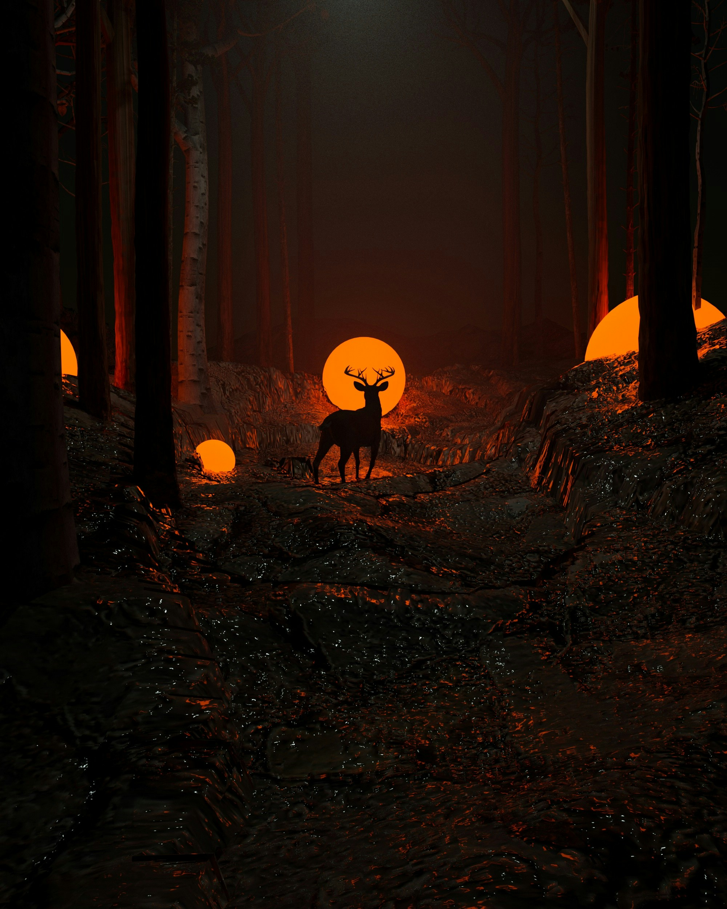
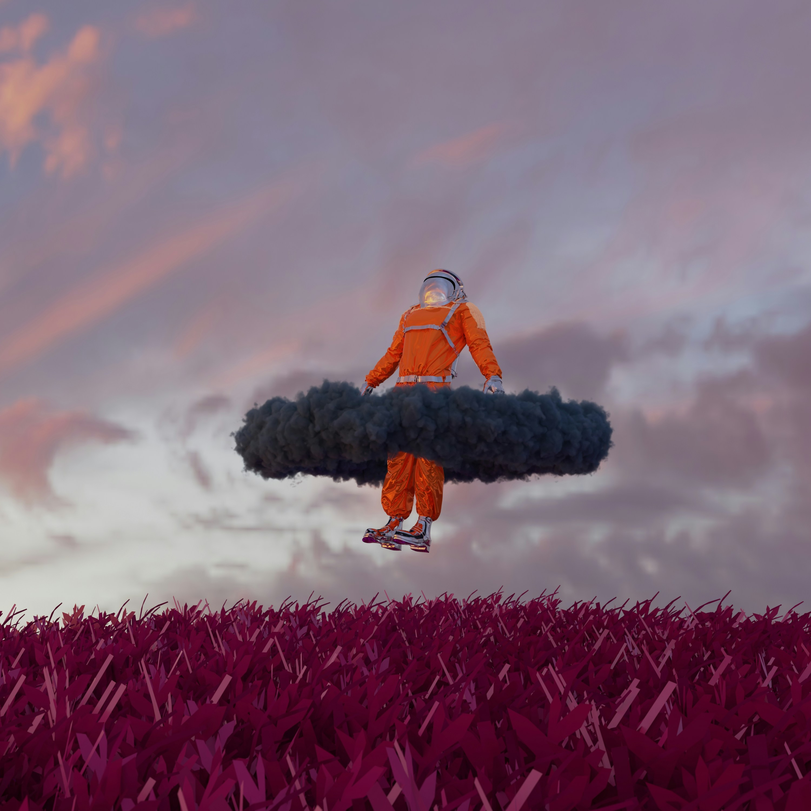

Digital art refers to artistic works or practices that utilize digital technology as an essential part of the creative or presentation process. It encompasses a wide range of creative expressions, from purely digital paintings and illustrations to complex digital installations and interactive media. Here are some key aspects of digital art:
Key Aspects of Digital Art
1. Creation Tools:
- Software: Programs like Adobe Photoshop, Illustrator, Procreate, and Corel Painter are popular for creating digital paintings and illustrations.
- Hardware: Tablets, graphic tablets, and computers are the primary hardware used. Artists often use devices like Wacom tablets or iPads with styluses.
2.Forms and Techniques:
- Digital Painting and Illustration: Artists create works using digital brushes and tools that mimic traditional painting techniques.
- 3D Modeling and Animation: Creation of three-dimensional objects and animations using software like Blender, Maya, and 3ds Max.
- Digital Photography: Use of digital cameras and editing software to create and manipulate photographic images.
- Vector Art: Creation of art using vector graphics, which allows for scalability without loss of quality, typically done in software like Adobe Illustrator.
- Mixed Media: Combining traditional art forms with digital processes, such as scanning hand-drawn images and enhancing them digitally.
3. Applications:
- Entertainment Industry: Used extensively in video games, movies, and animation for creating visual effects, characters, and environments.
- Marketing and Advertising: Creation of digital advertisements, logos, and promotional materials.
- Interactive Art: Includes installations and works that involve user interaction, often found in museums and public spaces.
- **Virtual Reality (VR) and Augmented Reality (AR): Creating immersive experiences where digital art forms the environment or interactive elements.
4. Distribution and Exhibition:
- Online Platforms: Websites, social media, and digital galleries where artists can share their work globally.
- Prints and Merchandise: Digital art can be printed on various materials or turned into products like clothing, posters, and home decor.
- Physical Exhibitions: Digital art can be displayed in traditional galleries through digital displays or projections.
Importance and Impact
Digital art has revolutionized the way art is created, distributed, and experienced. It allows for greater experimentation and innovation, making art more accessible to both creators and audiences. The integration of digital technology into art practices continues to expand the boundaries of what is possible in the art world.